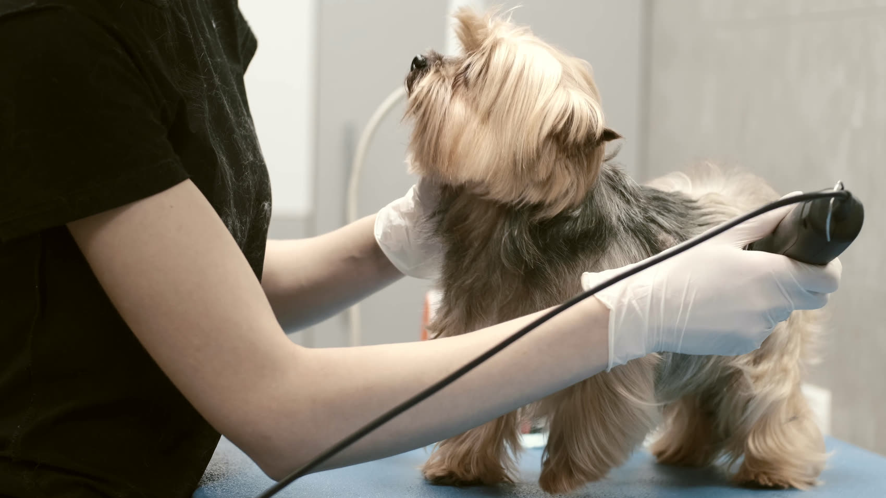

01
Комплексный груминг собак
Полный цикл: от мытья до финального силуэта. Подбираю шампунь под тип шерсти, развожу колтуны без «сбривания под ноль», где это возможно, и стригу по стандарту породы или по вашему запросу — если хотите короче и практичнее, так и сделаем.
- Купание с подбором шампуня и кондиционера
- Сушка и разбор шерсти на поток
- Стрижка: корпус, лапы, морда, оформление силуэта
- Когти, уши, шерсть между подушечками